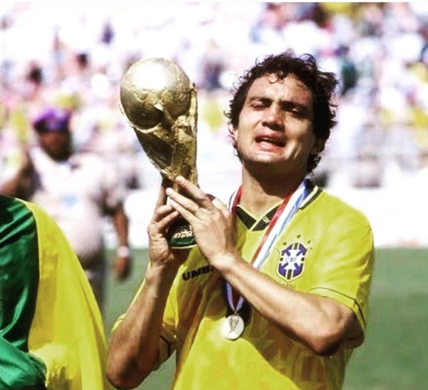
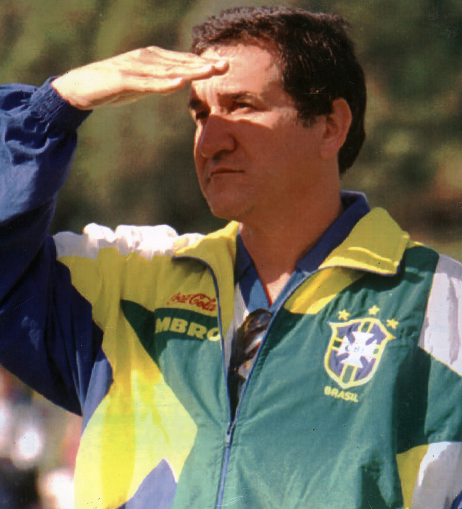

O Fim da Agonia: A Jornada Épica e a Conquista do Tetra em 1994
Para o torcedor brasileiro, 1994 não foi apenas o ano de uma Copa do Mundo; foi o ano da redenção. Nos Estados Unidos, a Seleção Brasileira misturou o talento letal de seu ataque com uma solidez defensiva sem precedentes para espantar os fantasmas de 24 anos sem levantar a taça.
País Sede:
Estados Unidos

Os Protagonistas

O Cara da Copa: Romário
O "Gênio da Grande Área" estava no auge de sua forma física e técnica. Após ser chamado às pressas nas Eliminatórias para salvar o Brasil, Romário assumiu a camisa 11 e comandou o time nos Estados Unidos. Com 5 gols, frieza absoluta e uma habilidade sobrenatural em espaços curtos, ele foi merecidamente eleito o melhor jogador do torneio.

O Herói Improvável: Branco
O lateral-esquerdo chegou aos Estados Unidos sob forte desconfiança devido a problemas físicos. Começou o torneio no banco de reservas, mas após a expulsão (e posterior suspensão) do titular Leonardo nas oitavas de final contra os EUA, Branco assumiu a posição. Sua redenção máxima ocorreu no gol de falta salvador contra a Holanda e na precisão cirúrgica de sua cobrança na disputa de pênaltis da grande final.

O Comandante: Carlos Alberto Parreira
Fortemente criticado por adotar um estilo de jogo pragmático — longe do tradicional "futebol arte" de 1982 que encantou, mas não venceu , Parreira construiu um time focado no equilíbrio. Com uma trinca de ferro no meio-campo (liderada por Mauro Silva e Dunga) e uma zaga sólida (Aldair e Márcio Santos), ele blindou o gol de Taffarel para dar total liberdade a Romário e Bebeto na frente. A história o absolveu e o coroou como um estrategista genial.
O Esquadrão de Ouro